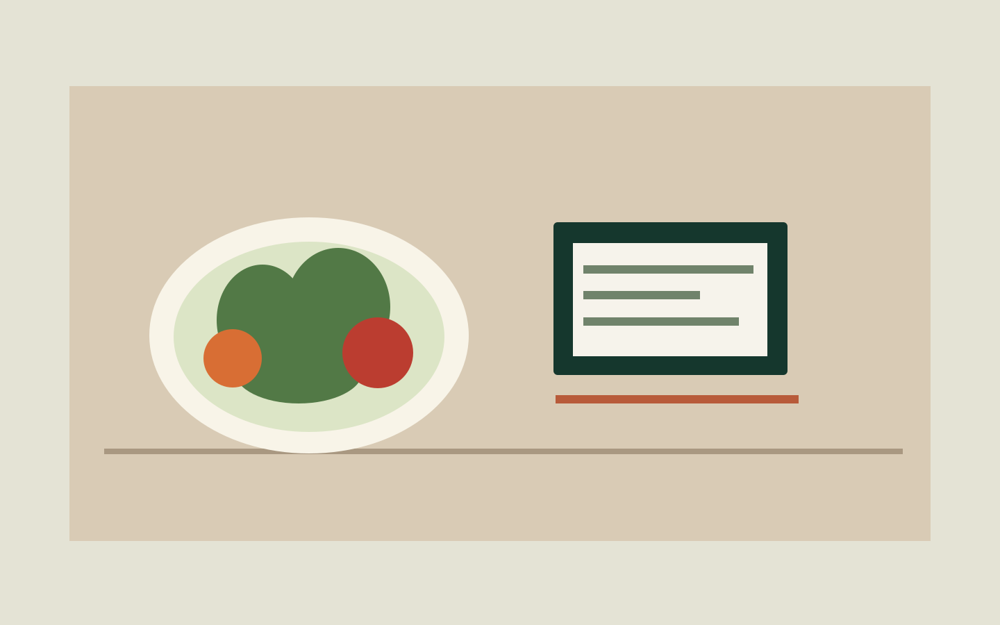

Frutas y verduras al por mayor para restaurantes.
Una compra empresarial necesita información precisa: productos, cantidades, frecuencia y zonas de atención. Cuéntanos qué requiere tu restaurante o cadena.

Cuando las compras forman parte de la operación.
Un equipo de compras puede necesitar comparar proveedores y coordinar insumos para distintas preparaciones. El primer paso es una lista clara de productos y cantidades.
Qué datos necesitamos para evaluar tu solicitud.
Productos y variedades
Qué frutas y verduras necesitas, y para qué preparaciones.
Volumen y frecuencia
Cantidades estimadas, compra puntual o recurrente.
Locales y distritos
Cuántos establecimientos y dónde están ubicados.
Experiencia en abastecimiento empresarial.
Actualmente atendemos una relación comercial de suministro mayorista con una cadena de restaurantes presente en distintas zonas de Lima.
De la consulta al acuerdo comercial.
Envía tu lista
Cuéntanos qué productos y cantidades consideras.
Revisamos el contexto
Evaluaremos los detalles del requerimiento [VALIDAR].
Confirmamos condiciones
Si podemos cotizar, coordinaremos los siguientes pasos [VALIDAR].
Antes de cotizar.
Indica sedes y distritos para evaluar la viabilidad comercial.
Comparte tu volumen para revisar condiciones.
Sí, la solicitud admite frutas y verduras.
Tu cocina empieza con un requerimiento claro.
Solicitar cotización ↗Consulta frutas y verduras en una misma lista.
El catálogo orientativo ayuda a especificar tu requerimiento sin prometer inventario permanente.
Explorar productos ↗